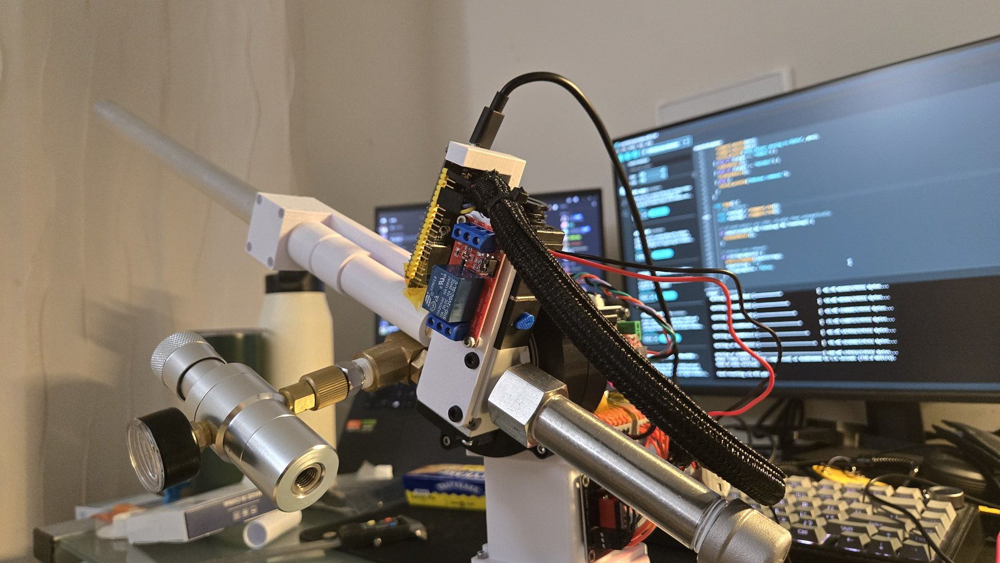
Autonomous Tracking Turret
A two axis turret that finds a person on camera, keeps them centered, and fires foam darts with CO2.
I designed and built the hardware for a turret that tracks a person and fires foam darts. Direct drive steppers could not move the top heavy head, so I designed printed cycloidal reducers for both axes. An ESP32 streams video to a laptop that runs pose detection and sends aim corrections back over UDP.
Sheet 2 of 6
Requirements and first prototype
The goal was a turret that points a launcher at a moving person automatically, on a student budget. From the first brainstorm I fixed four choices: two axes, CO2 instead of springs, stepper motors, and an ESP32 instead of a Raspberry Pi. Each one was picked for cost and simplicity. The base motor rotates with the head so the turret can sweep a full 360 degrees without twisting its wiring.
The first prototype drove both axes directly. It spun freely with no load, but the base NEMA 17 could not turn the finished head. The fix had to add torque without adding much size or a larger motor.

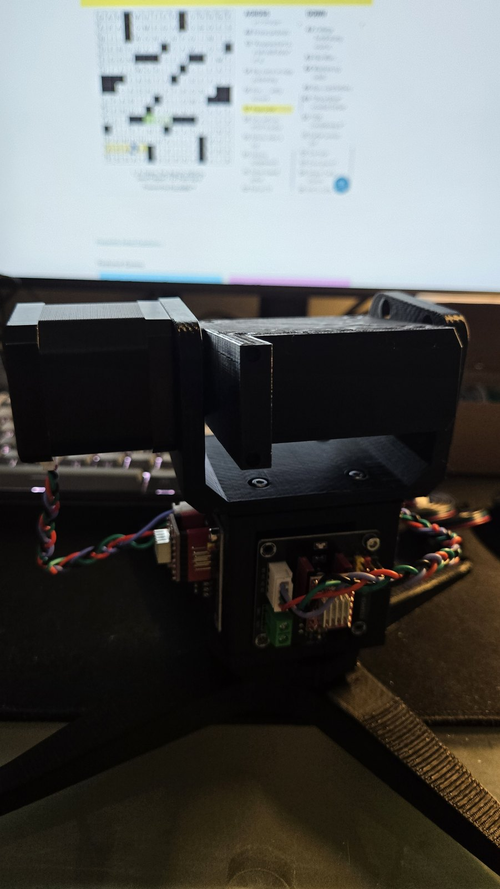

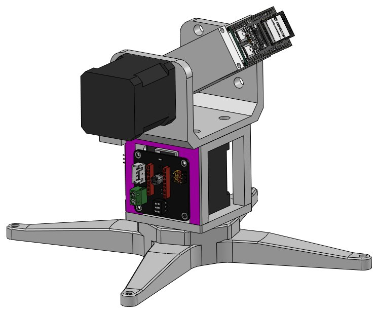

Sheet 3 of 6
Cycloidal reducers
A cycloidal drive gives a high ratio in a single compact stage and runs quietly, and every part can be printed. I derived the cycloid disc profile parametrically in Desmos, adjusting pin count, pin radius, and eccentricity, then brought the curve into SolidWorks as the disc sketch.
The result was two drives: 18:1 for azimuth and 12:1 for elevation, both on NEMA 17 steppers. I checked each printed drive by hand for smooth engagement before mounting it, then designed the brackets that tie the two axes together.

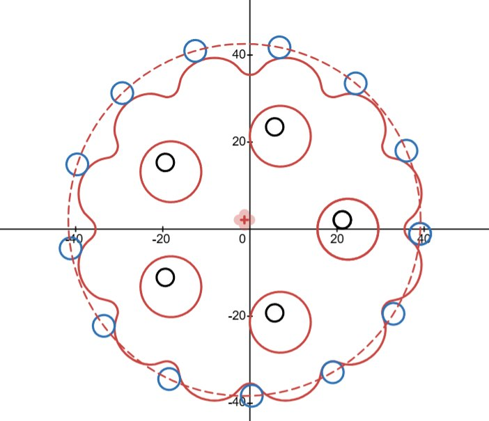

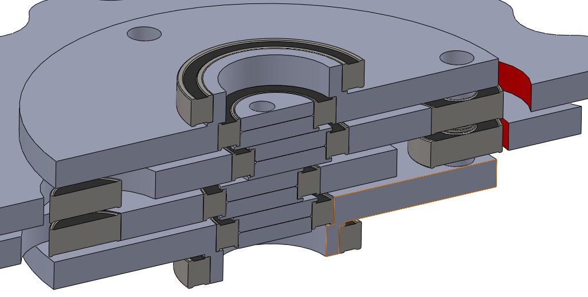

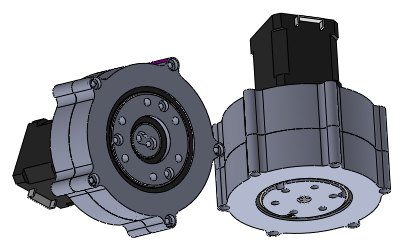
Sheet 4 of 6
CO2 firing system
Gas path: CO2 cartridge, regulator, a small shot chamber, a 3/2 way solenoid valve, then the barrel. On the bench the valve clicked at 12 V but never shifted, and raising the voltage changed nothing. Cycling it by hand only opened one set of ports. The cause was supply pressure: the valve will not shift below about 20 psi, which is typical of pilot operated valves, so it could never cycle on an unpressurized bench.
To size the chamber and barrel I modeled the shot as isothermal expansion pushing a 1 g dart. At 60 psi the model predicts about 100 m/s after 0.3 m of travel, which is 97% of the model's peak speed, with 37 kPa still in the chamber. A longer barrel adds almost nothing. The model ignores friction, so the real setting needs some margin. An early live shot broke the dart outright.

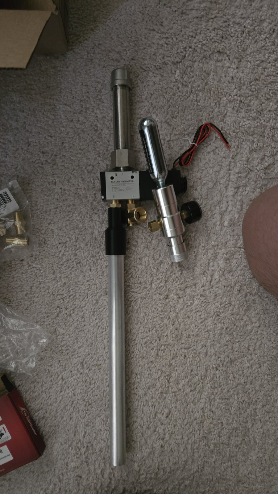

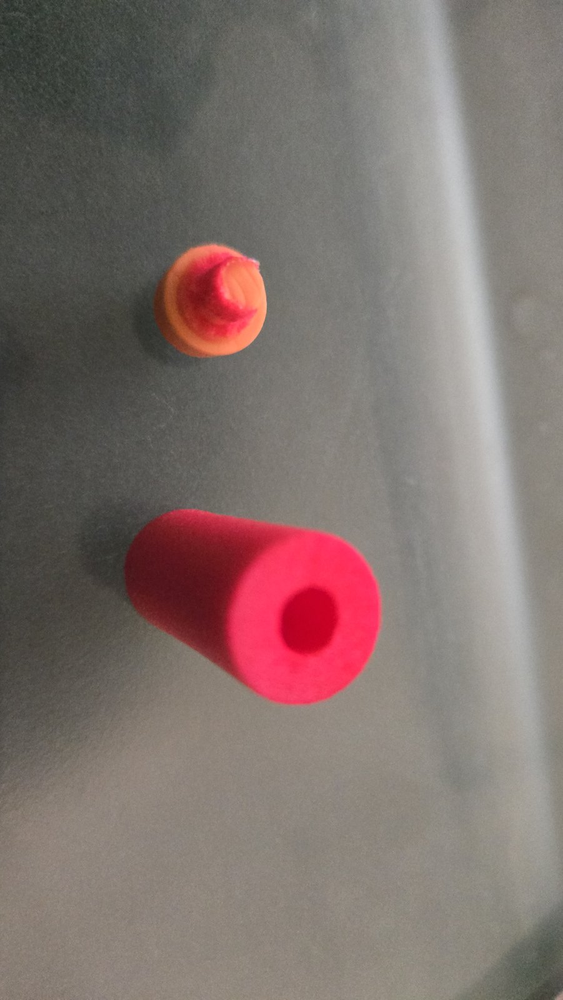
Sheet 5 of 6
Electronics and firmware
An ESP32 with a camera runs everything on the turret. Two A4988 drivers on a 12 to 24 V rail drive the steppers, an AS5600 magnetic encoder reads the pitch axis over I2C, and relays switch the 12 V solenoid valves. Before wiring I audited every ESP32 pin for strapping, UART, and USB conflicts so nothing would fight the boot sequence.
Tracking is split across two machines. The ESP32 streams video over WiFi and executes motion and firing. A laptop runs MediaPipe pose detection, written by Jinson, and sends aim corrections over UDP. The firmware turns each correction into stepper moves with AccelStepper.

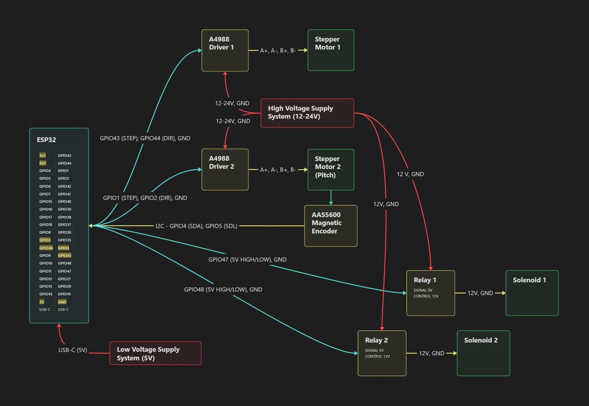

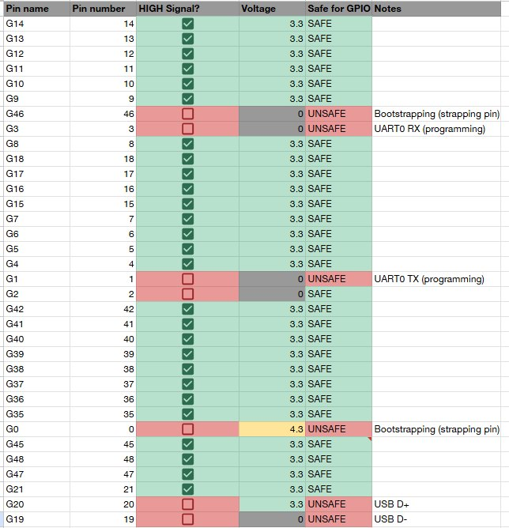
Sheet 6 of 6
Results and next steps
The prototype moved both axes under firmware control, ran the fire sequence, and fired darts on the bench. The limits were in the camera path: the ESP32 was slow to capture and send frames, could not run detection locally, and its camera resolution capped tracking range.
Next steps: a battery so the turret runs untethered, a single board computer to run detection on the turret, and automatic dart feeding.

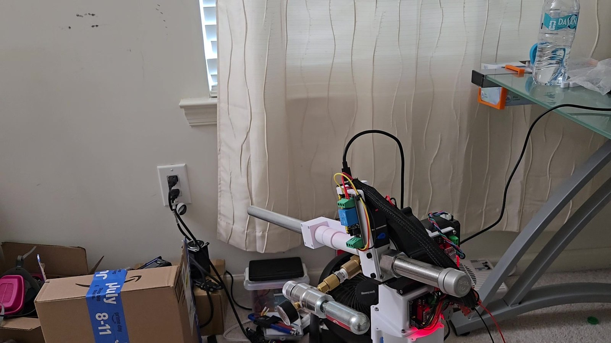
Files
- Case study (PDF)
- Design journal (PDF)
- 18:1 cycloidal drive (STEP)
- 12:1 cycloidal drive (STEP)
- ESP32 firmware
- Pose tracking script
- All files on GitHub
Pose tracking software by Jinson Jimmy (University of Maryland).